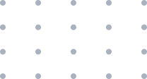
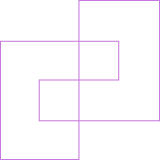

about-me
Get to know me better
Hi, I'm Saroj Shrestha
I'm an Umbraco Web Developer focused on building clean, scalable, and editor-friendly websites using Umbraco CMS and .NET. I enjoy turning ideas and designs into reliable, real-world solutions.
My work mainly involves developing Umbraco-based websites, creating custom Block List components, dashboards, and implementing search functionality using Examine. I enjoy experimenting, refining existing implementations, and improving overall content editing experiences.
Outside of development work, I like learning new technologies, working on side projects, cycling in the morning, and exploring how AI can support and improve developer workflows.

what-i-do
Build and customize Umbraco CMS websites
Develop Razor views and .NET controllers
Implement custom search with Examine
Create dashboards and backoffice tools
Collaborate with designers and development teams

my-approach
I focus on writing clean, readable code and building solutions that are easy to maintain and simple for content editors to use. I value clarity, performance, and continuous improvement in everything I build.
skills-and-tools
Umbraco & .NET
- Umbraco CMS (v9–v13)
- .NET / ASP.NET Core
- C# — working knowledge
- Razor / .cshtml
- MVC pattern
- Examine / Lucene search
Frontend
- HTML & CSS
- JavaScript
- AngularJS (Umbraco backoffice)
- Responsive layouts
Umbraco specifics
- Block List components
- Custom dashboards
- Property editors
- Document & media models
- Backoffice extensions
Search
- Custom Examine indexers
- Block List content indexing
- Partial keyword matching
- SEO-friendly URL routing
Tools
- Git / GitHub
- Visual Studio
- VS Code
- Browser DevTools
Still growing
- Advanced C# patterns
- Unit testing
- CI/CD pipelines
- TypeScript